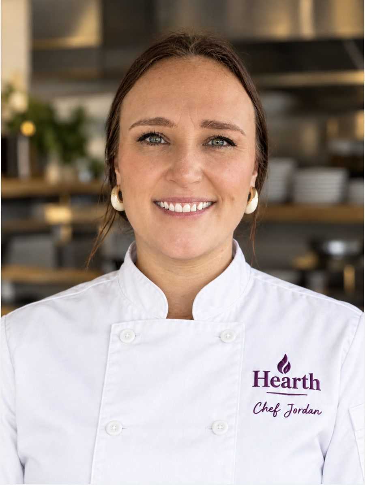

Catering
Birthdays, showers, holidays and gatherings, with food cooked fresh and delivered ready to serve.
- Menus built around your event
- Dietary needs and allergies planned for
- Delivery across the Tulsa Metro
Quoted per event · 50% deposit to book
Catering, weekly private chef service and meal prep, cooked from scratch in small batches. Every menu is planned around you, your guests and how you like to eat.
Turkey, sides and pies, delivered Wednesday, Nov 25. Order by Saturday, Nov 14.
Every client is different, so pricing is quoted after we talk about your needs, your guests and your kitchen.
Birthdays, showers, holidays and gatherings, with food cooked fresh and delivered ready to serve.
I shop, cook in your kitchen, then package and label meals for the week.
Ready-to-heat meals cooked in small batches, so a good dinner is never far away.

I built Hearth Kitchen Co. for two reasons: to feed people really, really well, and to show my daughter that you can be your own boss.
Hospitality is in my bones. I earned my degree in Hotel and Restaurant Administration, with a minor in Entrepreneurship, at Oklahoma State University (Go Pokes!), then headed to Napa Valley for the Accelerated Culinary Arts Program at the Culinary Institute of America in St. Helena, California.
From there I cooked classic French cuisine to Michelin standards on the line at Auberge du Soleil, then came home to Tulsa as sous chef at Southern Hills Country Club. I helped build seasonal menus around local ingredients and cooked for two major golf championships: the Masters, and the 2022 PGA Championship right here at Southern Hills. Along the way I earned my Introductory Sommelier Certificate and served on the Wine Forum of Oklahoma's culinary committee with Ree Drummond and Tiffany Poe.
Nobody told me to do this. Opening my own kitchen was a leap of faith, built on believing in myself and trusting God, and He has been holding me the whole time. Now everything I've learned, from fine-dining plates to championship crowds, comes straight to your table.
Pull up a chair. Love, Jordan
Simple from first message to the last bite.
Tell me about your event or your week using the form below.
We go over the menu, guest count, dietary needs and dates.
You get a quote and an invoice. A 50% deposit holds your date.
The balance is due the day of your event. Then sit down and eat.
I reply within a day or two with questions and a quote.